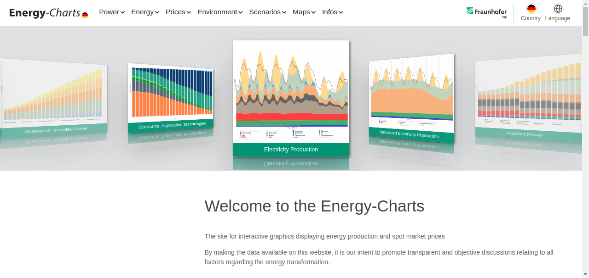

Simple Twitter and Webscraping Bot
How to program a Bot that is able to fetch Website-Data and post it on Twitter
Note: Some of the code on this site may not longer work, because Twitter deprecated API V1 and now switched to V2
Note: Some of the code on this site may not longer work, because Twitter deprecated API V1 and now switched to V2
Published: 14.10.2022
I always wanted to build my own Twitter-Bot. A while ago I found the Website "energy-charts.info", a website, which publishes live energy data. It was really interesting, so I thought to myself, why not make a Twitter-Bot, so more people are able to inform themselves, about how much renewable energy is produced in their country.
Getting started
Before I could start programming, I first had to register on the Twitter Developer Portal to get access to the API, because i wanted to upload pictures of the data i applied for "Elevated Access". After some trying I send my first tweet via the API:
"This is my first tweet!", with a picture of a cat.
This is the code i used:
"This is my first tweet!", with a picture of a cat.
This is the code i used:
Python
import tweepy, twitter_keys
consumer_key = twitter_keys.consumer_key
consumer_secret = twitter_keys.consumer_secret
access_token = twitter_keys.access_token
access_token_secret = twitter_keys.access_token_secret
def api():
auth = tweepy.OAuthHandler(consumer_key, consumer_secret)
auth.set_access_token(access_token, access_token_secret)
return tweepy.API(auth)
def tweet(api: tweepy.API, message: str, image_path = None):
api.update_status_with_media(message, image_path)
print('Tweeted succesfully')
if __name__ == '__main__':
api = api()
tweet(api, 'Hello World!', 'cat.png')
Now the next step was to program a simple Webscraping-Bot. I did this with Selenium. To get started with Selenium I first installed the Python Selenium-Library and downloaded the chrome webdriver. After having some problems initally, I then got it to work and started of bz visiting the Homepage of "energy-charts.info" grabbed the h1-Heading and took a screenshot of the Site.
Python
from selenium import webdriver
from selenium.webdriver.chrome.service import Service
from selenium.webdriver.common.by import By
from selenium.webdriver.chrome.options import Options
options = Options()
options.BinaryLocation = 'BINARY_LOCATION'
driver_path = 'DRIVER_PATH'
def data_scraper():
url = 'https://www.energy-charts.info'
image = 'PATH_TO_THE_IMAGE_WE_WILL_TAKE'
browser = webdriver.Chrome(options = options, service=Service(executable_path = driver_path))
browser.set_window_size(1280, 735)
browser.get(url)
#opens website
browser.save_screenshot(image)
#locating the title and getting its text
title = browser.find_element(By.XPATH, '//*[@id="homepage"]/section[1]/div/div/div[2]/h1').text
#shows me the image i took
browser.get("file://" + image)
browser.implicitly_wait(5)
browser.close()
print(title)
if __name__ == '__main__':
data_scraper()
Output:
Welcome to the Energy-Charts

It works! The h1-Heading of the page is "Welcome to the Energy-Charts" and it took the screenshot you can see on the left. Now that we have the basics down, we can start coding the actual Bot.
Programming our finished Bot
We start of by importing all our libraries and setting selenium up.
Python
import tweepy, twitter_keys, time, os, glob
import pandas as pd
#initalize webdriver
from selenium import webdriver
from selenium.webdriver.chrome.service import Service
from selenium.webdriver.common.by import By
from selenium.webdriver.chrome.options import Options
options = Options()
options.BinaryLocation = 'usr/share/chromium'
driver_path = '/usr/bin/chromedriver'
After that we then initalize the Twitter-API by authenticating with our custom keys:
Python
def initalize():
#initalize Twitter
consumer_key = twitter_keys.consumer_key
consumer_secret = twitter_keys.consumer_secret
access_token = twitter_keys.access_token
access_token_secret = twitter_keys.access_token_secret
auth = tweepy.OAuthHandler(consumer_key, consumer_secret)
auth.set_access_token(access_token, access_token_secret)
api = tweepy.API(auth, wait_on_rate_limit = True)
return api
The data_scraper Function First asks us, which interval we want to tweet about and about the timespan. It then visits the specific site on "energy-charts.info". There it takes a screenshot and downloads a csv with all the raw-data. It then reads the CSV-File and adds up all the numbers, to find out how much renewable, nuclear and fossil power was generated in that period.
Python
def data_scraper():
#You can first choose the interval and timespan
interval = ["day", "month", "quarter", "halfyear", "year"]
while True:
input_interval = input_interval1 = input("Which interval? (day, month, quarter, halfyear, year) ")
if input_interval in interval:
break
else:
print("Error: There is no such interval, choose from: day, month, quarter, halfyear, year: ")
if input_interval == "day":
input_interval1 = "datetimepicker"
input_time = input("Enter the " + str(input_interval) + " (if day timeformat dd.mm.yyyy) : ")
input_span = input("Enter the time span: ")
url = 'https://www.energy-charts.info/charts/energy_pie/chart.htm?l=de&c=DE&show_labels=1&interval=' + str(input_interval) + '&' + str(input_interval1) + '=' + input_time
image = '/home/felix_xrdp/python/API/energy-charts/electricity-generation.png'
browser = webdriver.Chrome(options = options, service=Service(executable_path = driver_path))
browser.set_window_size(1280, 735)
#open the url in the browser
browser.get(url)
#close menu
browser.find_element(By.XPATH, '//*[@id="modalBody"]/div/div/div[1]/button').click()
#scroll down and take a screenshot
browser.execute_script("window.scrollBy(0,10);")
browser.save_screenshot(image)
#get the page title, the title will later be used as text for our tweet
title = browser.find_element(By.XPATH, '//*[@id="pagetitle"]').text + input_span
#open menu, because we now wanna download the rawdata in to a csv-file
browser.find_element(By.XPATH, '//*[@id="chartToggle"]').click()
browser.find_element(By.XPATH, '/html/body/main/div/div/div[2]/div/div/div/div/div/div[2]/div/div/a[5]').click()
#set the export format to csv
browser.find_element(By.XPATH, '/html/body/main/div/div/div[2]/div/div/div/div/div/div[2]/div/div/div[5]/div/div[1]/div[2]/select/option[6]').click()
#click on the download button
browser.find_element(By.XPATH, '//*[@id="collapseExport"]/div/div[1]/div[2]/div/button/span/i').click()
#we now downloaded the csv-file into our downloads, but we now change its path and rename it
files = glob.glob('/home/felix_xrdp/Downloads/*.csv')
print(files)
#it gets the old file name by check which file is the latest in our downloads
old_name = max(files, key=os.path.getctime)
print(old_name)
#rename the file
new_name = '/home/felix_xrdp/python/API/energy-charts/electricity-generation.csv'
os.rename(old_name, new_name)
#open image with new path and display, to validate
browser.get("file://" + image)
browser.implicitly_wait(5)
browser.close()
We have now downloaded a CSV-File from the website, that contains all the raw-data. The file we downloaded is structured like this:
| Category | y | z | |
|---|---|---|---|
| 0 | NaN | NaN | NaN |
| 1 | Renewable Waste | 14.52 | 140.0 |
| 2 | Run-of-river | 42.22 | 140.0 |
| 3 | Storage Water | 1.72 | 140.0 |
| 4 | Biomass | 116.79 | 140.0 |
| 5 | Wind Offshore | 50.93 | 140.0 |
| 6 | Wind Onshore | 202.59 | 140.0 |
| 7 | Solar | 108.19 | 140.0 |
| 8 | Geothermal | 0.44 | 140.0 |
| 9 | Nuclear | 63.06 | 120.0 |
| 10 | Lignite | 265.99 | 100.0 |
| 11 | Natural Gas | 125.44 | 100.0 |
| 12 | Hard Coal | 48.27 | 100.0 |
| 13 | Oil | 1.45 | 100.0 |
| 14 | Non-renewable Waste | 16.73 | 100.0 |
| 15 | Other | 1.53 | 100.0 |
First of all you probably noticed, that the first line just says "NaN", so there is no number, thats why we will later skip the first row. The "y"-column displays how many Gigawatt hours this energy source produced on this day. When looking at the table longer, you will also notice, that renewable energies have the number "140" in the "z"-column, while nuclear power has "120" and all the fossil fuels have the number "100". So we need to iterate through the rows and check the number in the "z-column", so we can add up the power produced by renewable, nuclear and fossil sources.
Python
#we open the table with pandas
df = pd.read_csv(r'/home/felix_xrdp/python/API/energy-charts/electricity-generation.csv')
renewable = fossil = atom = 0
print(df)
#we now iterate through the rows, check the source and add them up
for x in range(len(df['z']) - 1):
if df['z'][x + 1] == 140:
renewable += df['y'][x + 1]
elif df['z'][x + 1] == 120:
atom += df['y'][x + 1]
elif df['z'][x + 1] == 100:
fossil += df['y'][x + 1]
return title, image, url, renewable, atom, fossil
With the tweet-function we sent the tweet and the screenshot we take.
Python
def tweet(api, text, image):
api.update_status_with_media(text, image)
print("tweet successfully sent!")
We now created all the individual functions, the execution function now ties them all together.
Python
def execution():
#it calls the initalize function
api = initalize()
#with data_scraper it gets the variables and takes the screenshot, we will need for our tweet
title, image, url, renewable, atom, fossil = data_scraper()
#we change the number from and Gigawatt Hours to Terrawatt hours and round them to 2 decimal places
renewable = renewable / 1000
renewable = round(renewable, 2)
atom = atom / 1000
atom = str(round(atom, 2))
fossil = fossil / 1000
fossil = str(round(fossil, 2))
text = str(title) + '\r\n' + str(renewable) + ' TWh Erneuerbare Energien (EE)\r\n' + str(atom) + ' TWh Kernenergie\r\n' + str(fossil) + ' TWh Fossile Energien\r\n' + str(url)
print(text)
input_tweet = input("Do you wanna Tweet this? [y/n]")
#maybe you want to change the text or image-path:
if input_tweet == "n":
input_text = input("Do you wanna change the text? [new text/n]")
if input_text == "n":
pass
else:
text = input_text
input_image = input("Do you wanna change the image? [new image-path/n]")
if input_image == "n":
pass
else:
image = input_image
if input("Send it like this? [y/n]") == "n":
quit()
tweet(api, text, image)
Now we just call the execution function and our script is finished!
Python
if __name__ == '__main__':
execution()
Output:
Which interval? (day, month, quarter, halfyear, year) day
Enter the day (if day timeformat dd.mm.yyyy): 22.10.2022
Enter the time span: \n
Category y z
0 NaN NaN NaN
1 Erneuerbarer Müll 14.52 140.0
2 Laufwasser 42.22 140.0
3 Speicherwasser 1.72 140.0
4 Biomasse 116.79 140.0
5 Wind Offshore 50.93 140.0
6 Wind Onshore 202.59 140.0
7 Solar 108.19 140.0
8 Geothermie 0.44 140.0
9 Kernenergie 63.06 120.0
10 Braunkohle 265.99 100.0
11 Erdgas 125.44 100.0
12 Steinkohle 48.27 100.0
13 Öl 1.45 100.0
14 Nicht-erneuerbarer Müll 16.73 100.0
15 Andere 1.58 100.0
Öffentliche Nettostromerzeugung in Deutschland am 22. Oktober 2022
0.54 TWh Erneuerbare Energien (EE)
0.06 TWh Kernenergie
0.46 TWh Fossile Energien
https://www.energy-charts.info/charts/energy_pie/chart.htm?l=de&c=DE&show_labels=1&interval=day&datetimepicker=22.10.2022
Do you wanna Tweet this? [y/n] y
tweet successfully sent!
And that's our tweet:
Other Tweets I tweeted automatically: